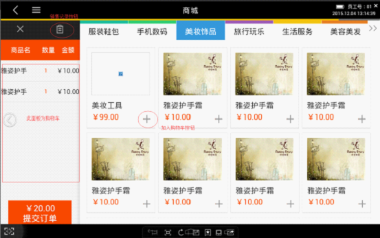
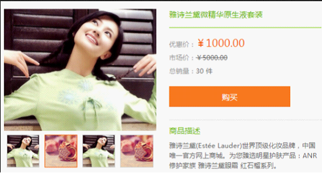
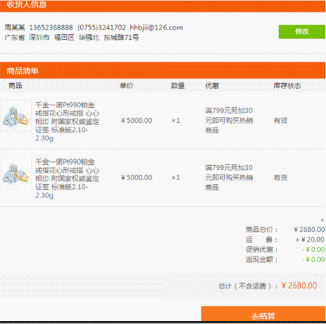
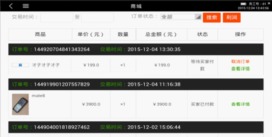
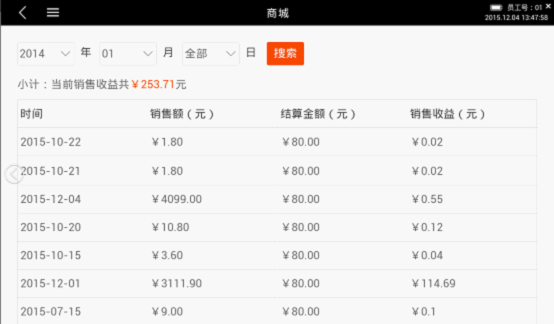

1、购买商品
商品发布后，POS端就呈现出已发布的商品，从POS端“我的应用”—B2C商城点击进入B2C商城首页，如下图20所示：

图20 商城首页
◆ 该页面左侧为购物车，展示用户选中的商品，并可删除所选商品
◆ 购物车顶部按钮可查看销售记录
◆ 页面顶部为商品一级分类，下面展示每个分类下的所有商品
点击某一商品后，打开商品详情页，如下图21所示：

图21 商品详情页
◆ 页面左侧展示商品正面图、详细图、细节图
◆ 页面右侧展示商品名称、市场价、优惠价、销量、商品描述等信息
◆ 点击“购买”按钮，该商品直接跳转到“订单信息”页面
在B2C商城首页（图20所示）点击“提交订单”，跳转到“订单信息”页面，如下图22所示：

图22 订单信息
点击修改按钮可修改发货地址
点击“去结算”按钮，跳转到收银台去结算（结算流程详见收银台操作说明）
2、销售记录
用户下单并付款后，POS端界面展示商品销售记录供商户查看使用
点击图20的“销售记录”按钮，查看销售记录，如下图23所示：
（T-linx商户后台也有销售记录数据，商家也可以登录PC端商户后台查看）

图23 销售记录
◆ 销售记录展示所有已付款的商品
◆ 若商品未发货，则可以查看订单、取消订单
◆ 若商品已发货，只能查看订单，不能取消
3、查看利润
商户可以通过智能POS终端查看B2C商城每天、每月、每年的利润统计。点击图23右上角利润按钮，可查看利润统计，如下图24所示

图24 利润统计